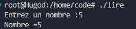

Cours de c :
Base :
Comment Compiler ?
On va utiliser gcc :
gcc "nom_du_fichier.c" //cela va renvoie un "a.out" c-a-d un executable
//---Pour nommer l'executable---
gcc "nom_du_fichier.c" -o "nom_de_lexecutable" // -o permet de nommer l'output.
Prinft + Variables :
La fonction printf permet d'afficher dans la console. Appelée dans printf :
Entier : printf("Entier %d \n", entier);
Float : printf("Flottant %.2f \n", flottant);
Char : printf("caractère %c\n", caractere);
Code montrant comment utiliser des variables :
#include <stdio.h>
int main(void)
{
//Initialisation des trois variables
int entier = 10;
float flottant =10.15;
char caractere = 'A';
printf("Entier %d \n", entier); // appel des trois variables avec printf
printf("Flottant %.2f \n", flottant);
printf("caractère %c\n", caractere);
printf("Entier : %d, Flottant : %.2f , Char : %c \n", entier,flottant,caractere);
}
Scanf :
La fonction Scanf permet de lire lire des données formatées à partir d'une entrée
Exemple d'utilisation :
#include <stdio.h>
int main(void){
int nombre; //initialisation de la variable nombre
printf("Entrez un nombre :");//affiche sur la console "entrez un nombre"
scanf("%d",&nombre);// utilisation de la fonction scanf sur l'adresse mémoire de nombre
// on récupère ce que l'utilisateur a écrit après "entrez un nombre"
printf("Nombre =%d\n", nombre); // Puis affichage de ce dernier
return 0;
}
Ce que cela renvoie : 
Exercice Simple :
Crée un programme C qui demande une température en Celsius et la convertie grâce à la formule Celsius x 1.8 + 32
Résolution :
#include <stdio.h>
int main(void){
float temperature_celcius; //temperature choisis a convertir
float temperature_fahrenheit; //resultat pour après
printf("Entrez la température que vous voulez convertir en fahrenheit : ");
scanf("%f",&temperature_celcius); //on recupere la valeur choisis
printf("Vous avez choisis : %.2f \n", temperature_celcius); // on l'affiche
temperature_fahrenheit = (temperature_celcius * 1.8 ) + 32 ; //on fait le calcul de conversion (C *1.8)+32
printf("Cela donne %.2f \n",temperature_fahrenheit);// On l'affiche
}
Arithmetique :
On va maintenant voir les différents calculs possibles les basiques : 1. Somme 2. Difference 3. Produit 4. Quotient 5. Modulo
A travers ce code vous trouverez des exemples de chacuns des 5 calculs :
#include <stdio.h>
int main(void){
int a = 10, b = 5; //manière rapide d'assigner des valeurs à plusieurs variables du même types
int somme = a + b;
int difference = a - b;
int produit = a * b;
float quotient = a / b;
int modulo = a % 3; //reste de la division (ex : 5 % 3 = 2)
printf("%d\n",somme);
printf("%d\n",difference);
printf("%d\n",produit);
printf("%.2f\n",quotient);
printf("%d\n",modulo);
return 0;
}
Les conditions :
Le IF (SI) :
Voici un code explicaiton l'utilision d'un IF, ELSE IF, ELSE En commentaire au dessus de la fonction main, il y a une explications des comparateurs.
#include <stdio.h>
int main(void){
// types de compateur :
/*
les retours : 1 = True et 0 = False
1. Le "==" si l'affirmation est vrai. Exemple : 5 == 3; va retourner 0 car 5 est differents de 3.
2. le "!=" signifie "différent de". Exemple : 5 != 3; va retoruner 1 car 5 est different der 3
3. le " < " plus petit que ou ">" plus grand que. Exemple : 5 < 3; va retoruner 0 car 5 est plus grand que 3
4. le "<=" ou ">=" même principe mais on inclus le 3 supérieur ou égal / inférieur ou égal.
*/
int nombre;
printf("Choisir un nombre : ");
scanf("%d", &nombre);
// on veut print savoir si le nombre est positif / négatif ou égal à 0
if (nombre > 0 ){ //si le nombre est supérieur à 0
printf("Le nombre est positif \n");
}
else if (nombre < 0){//si le nombre est inférieur à 0
printf("le nombre est négatif \n");
}
else { //si il est ni supérieur ni inférieur alors c'est 0
printf("Le nombre est zéro \n");
}
return 0;
}
Le ET LOGIQUE :
Le ET logique (&&) retourne vrai que si les deux conditions sont juste.
Il s'écrit de la sorte :
printf("%d\n", 1 == 1 && 0 == 1);
Cela va retourner 0 donc FALSE
Le OU logique
Le OU LOGIQUE (||) retorune vrai si une ou l'autre conditions est juste (ou les deux)
Il s'écrit de la sorte :
printf("%d\n, 1 == 1 || 0 == 1);
Cela va retourner 1(True) car une condition est juste (1 == 1).
A savoir :
La priorité est la suivante : Le OU est prioritaire au ET. Donc si il y a un OU et un ET alors le OU sera prioritaire. (Explication exo en dessous).
Exercice :
Il faut crée un programme qui determine si une année est bisextile ou non
Résolution d'exercice :
#include <stdio.h>
int main(void){
int annee;
printf("Donnez une année pour savoir si elle est bissextile : ");
scanf("%d",&annee);
/*
Une année bisextile doit réunir 3 condtions :
1. Divisible par 4.
2. Pas divisible par 100.
3. Sauf si divisible par 400.
Si divisible par 400 alors la règle 2 n'est pas prise en compte
*/
if (annee % 4 == 0 && annee % 100 != 0 || annee % 400 == 0){
printf("L'année %d est bissextile\n",annee);
}
else{
printf("L'année %d est pas bissextile\n",annee);
}
}
Les Boucles :
While
#include <stdio.h>
int main(void){
/*
Boucle WHILE (tant que) :
On veut faire un boucle qui affiche un chiffre 5 fois jusqu'à que i = 5
On doit l'incrémenter a chaque passage
*/
int i = 0;
while(i < 5){ // tant que i est inférieur a 5
printf("%d\n",i);
i = i+1;//increment de i
}
return 0;
}

Do While :
#include <stdio.h>
int main(void){
/*
Boucle DO WHILE (Fais ... tant que ... ) :
Même principe sauf que l'on fait quelque chose avant de lancer la boucle
Exemple ici si i est > a 5 alors il va pas afficher 0,1,2,3,4
mais simplement le i puis fermer le programme
*/
int i = 10;
do {
printf("%d\n", i);
i = i+1;
} while ( i < 5);
return 0;
}

FOR :
Programe simple expliquant la boucle FOR de manière la plus triviale possible :
#include <stdio.h>
int main(void){
/*
Boucle FOR (Pour ...)
Se construit de cette manière : for(variable ; condition ; incrémentation)
*/
for (int i = 0; i < 5 ; i++)
{
printf("%d\n", i);
}
}
Autre exemple :
#include <stdio.h>
/*
On veut demander un nombre puis parcourir de 0 à ce nombre pour ajouter chaque nombre qu'il possèe et en faire la somme
exemple 5 : 0+1+2+3+4+5 = 15
*/
int main(void)
{
int nombre;
int somme = 0;
printf("Choisir un nombre : ");
scanf("%d",&nombre);
for (int i = 0; i <= nombre ; i++){ // pour i = 0 ; tant qu'il est pas = a 5 ; i +1
somme += i; // on ajoute i à la somme
}
printf("%d est la somme de tout les nombres de %d\n",somme,nombre);
return 0;
}
Exercice
Ecrire le résultat d'un terme donné par l'user avec la suite de fibonnaci exemple rang 5 de fibonnaci = 8 Fibonnaci : addition des deux derniers termes 0 + 1 + 1 + 2 + 3
Donnée connu : Terme 1 = 0 Terme 2 = 1
Résolution :
int main(void){
/*
Suite de fibonnaci :
On doit ajouter les deux dernier termes de la suite avec le nombre de terme
*/
int fib1 = 0; //terme 1 de fibnonnaci
int fib2 = 1; //temre 2 de fibonncaci
int terme;
int somme = 0;
printf("Combien de termes voulez vous affichez");
scanf("%d",&terme);
for (int i = 0 ; i < terme ; i++){ // on parcours jusqu'au terme demandé
somme = fib1 + fib2; //somme sera le résultat final on additionne terme -2 et terme -1
fib1 = fib2; // on remplace terme -2 par terme -1
fib2 = somme; // on remplace terme -1 par resultat terme
}
printf("Le rang %d de la suite de fibonacci est %d \n",terme,somme);
return 0;
}
Les Fonctions :
La base des fonctions : On va crée une fonction qui permet d'additonner :
#include <stdio.h>
int addition(int a, int b){ // fonction avec paremetre deux entier a et b
return a + b; // l'addition basique
}
int main(void){
int somme = addition(5,35);// on appelle la fonction addition dans la variable somme pour que 5 et 35 s'additionne
// donc a = 5 et b = 35
printf("La somme est %d\n",somme);
return 0;
}
Les tableaux :
Crée un tableau puis l'afficher : Syntaxe : tableau[LongTableau] = {1,2,3,4,5,6};
#include <stdio.h>
int main(void){
float notes[] = {15.5,9.7,18,1.3};// on peut faire notes[4] pour dire qu'il y a quatre éléments
for (int i = 0 ; i < 4 ; i++){ // on boucle sur le tableau pour afficher chaque note
printf("La note est : %2f\n",notes[i]); // on affiche le rang (i) à chaque appel
}
return 0;
}
Les Tableaux a doubles entrées :
#include <stdio.h>
int main(void)
{
int tableau[2][3] = {{1,2,3},{4,5,6}}; // tableau multi dimensions
for (int i = 0; i < 2 ; i++)// on parcours le premier tableau (de 2)
{
for (int j = 0; j< 3 ; j++) // on parcours le deuxieme tableau (de 3)
{
printf("%d" , tableau[i][j]);
}
printf("\n");
}
return 0;
}
Les chaines de caractères :
#include <stdio.h>
int main(void)
{
//Pour initialiser une chaines de charactères :
char prenom[32]; // prenom[32] est la variable str, 32 est le nb de charactères alloué max.
printf("Entrez votre prénom : ");
scanf("%s",prenom); //pas besoin de pointeur car prenom point vers une adresse mémoire car un tableau sans {} est un pointeur vers la première case du tableau
printf("Bonjour, %s \n",prenom);
return 0;
}
fonction internes au strings : - longueur d'un mot : strlen() : changer le %s en %lu
Les Pointeurs :
#include <stdio.h>
void add_one (int *number)// ICI * signifie l'adresse de la variable number
{
printf("Adresse de numbre %p\n", number);
*number = *number + 1; // on modifier la valeur de l'entier stocker à l'adresse
}
int main(void)
{
int value = 42;
printf("Value : %d \n", value);
printf("Adresse de value : %p \n", &value);
add_one(&value); // on appelle la fonction sur value mais avec le pointeur pour modifier la variable
printf("Value : %d\n", value);
return 0;
}
Les Structures :
Exemple :
#include <stdio.h>
struct Student {
char prenom[50];
int age;
float notes[10];
};
int main()
{
struct Student s1;
printf("Entrez un prénom : ");
scanf("%s", s1.prenom);
printf("Entrez un age : ");
scanf("%d", &s1.age);
printf("Prénom : %s\n", s1.prenom);
printf("Age : %d \n",s1.age);
return 0;
}
Exercice
Exercice sur la structure, les pointeurs, les tableaux, le scanf etc
Il faut crée une liste de contact avec nom prenom et numéro de telephone Puis afficher la liste de contact :
#include <stdio.h>
/*
Création d'une structure contact avec prénom numéro et age
*/
struct Contact
{
char prenom[30];
char numero[10];
int age;
};
int main(void){
struct Contact contacts[2]; // on initialise le tableau de 2 contacts via la structure
for (int i = 0; i < 2 ; i++){ // on parcours le tableau pour le remplir
printf("Entrez un prénom");
scanf("%s", contacts[i].prenom);
printf("Entrez un age");
scanf("%d", &contacts[i].age);// on pointe seulement pour le int ici avec &
printf("Entrez un numéro");
scanf("%s", contacts[i].numero);
} printf("\n Liste de contact : "); //maintenant on veut afficher la liste de contact
for (int i = 0 ; i < 2 ; i++)//on reparcours les contacts
{
printf("Contact numéro : %d\n", i + 1 );
printf("Prénom : %s\n", contacts[i].prenom);//on affiche le prenom en parcours le tableau à l'indice i
printf("age : %d\n", contacts[i].age);//pareil
printf("numéro : %s\n", contacts[i].numero); // pareil
}
return 0;
}
Résultat